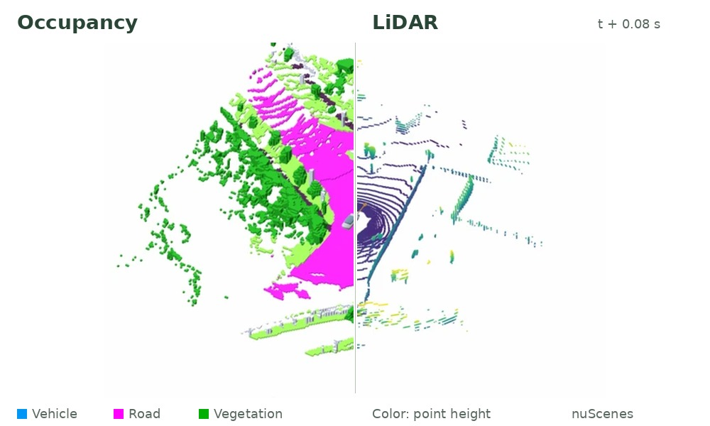
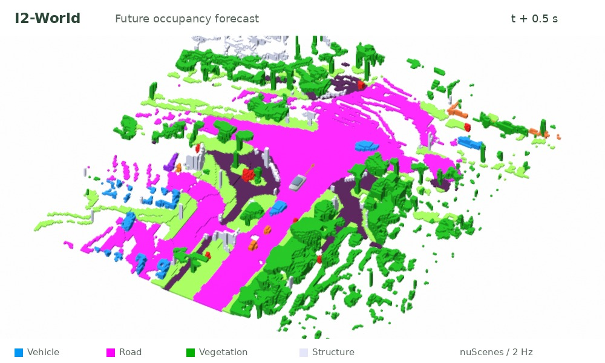
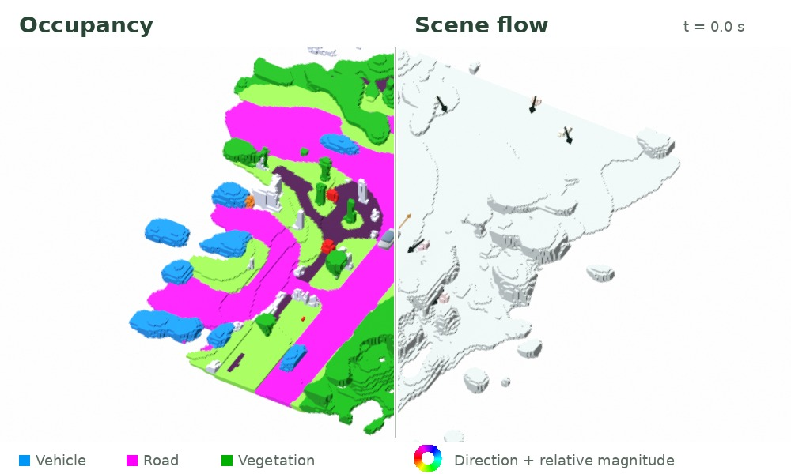
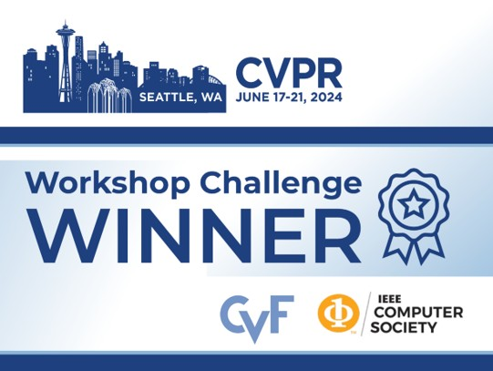

3D PERCEPTION & WORLD MODELS
Zhimin Liao
廖智民
Ph.D. Student · Artificial Intelligence
Xi’an Jiaotong University
I study how machines represent the 3D world and anticipate what comes next, with a focus on autonomous driving.
My research spans 3D occupancy, scene flow, and efficient 4D scene forecasting — building sparse and tokenized representations of a changing world.
Currently, I’m also a Perception Algorithm Intern at Horizon Robotics.
00
Background.
教育与工作经历
From automation to artificial intelligence, with a focus on understanding the world in 3D.
Education
教育背景-
 — PRESENT
— PRESENTXi’an Jiaotong University
Ph.D. in Artificial Intelligence
Expected June 2028
-
 —
—Jilin University
Bachelor’s in Automation
Work Experience
工作经历-
— PRESENT
Horizon Robotics
Perception Algorithm Intern


Earlier & collaborative work06 PAPERS +
02
Awards.
获奖荣誉

LET’S CONNECT
Good research starts
with a conversation.
liaozm@stu.xjtu.edu.cn
For research discussions and collaboration.